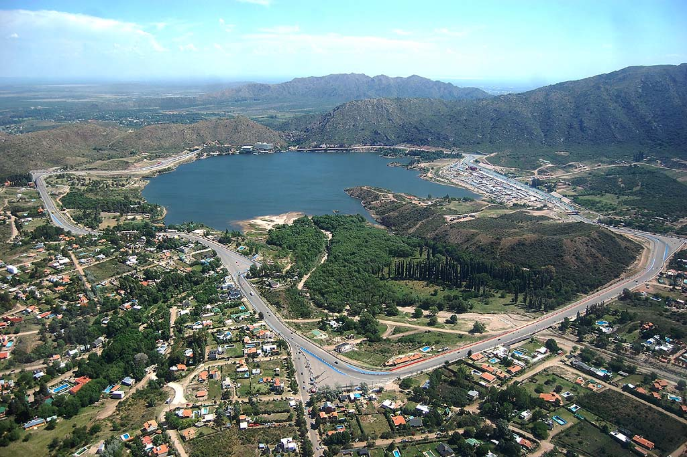

Ubicación
Cómo llegar
Situadas en Las Violetas 98,
Potrero de Los Funes, San Luis, Argentina.
Unos de los lugares más hermosos de San Luis, equipado con todo el confort.
Descubre la belleza de Potrero de Los Funes
Potrero de Los Funes es un destino turístico destacado en la provincia de San Luis. Además de disfrutar de nuestras cabañas, podrás explorar diversas atracciones y actividades en los alrededores, como:

- Recorridos en bicicleta por los senderos naturales
- Paseos en bote por el Lago Potrero de Los Funes
- Excursiones a las sierras de los alrededores
- Visitas a la Reserva Natural de la Quebrada de los Cóndores
- Avistamiento de aves y fauna autóctona
- Práctica de deportes acuáticos como kayak y paddle surf
¡Sumérgete en la belleza natural de la zona y disfruta de una estadía inolvidable en Cabañas Ludmar!